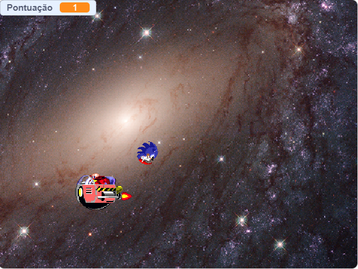
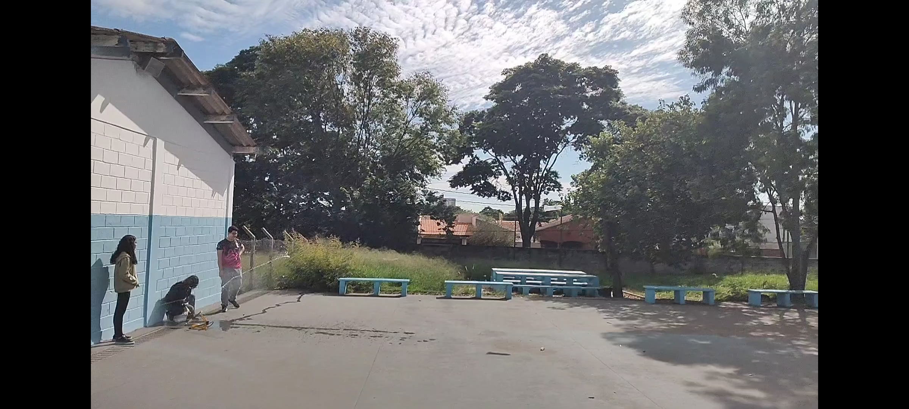

Meus projetos

Ping Pong classico utilizando P5JS
Este projeto é um jogo de Ping Pong clássico desenvolvido com a biblioteca P5.js, onde o objetivo é rebater a bola e marcar pontos contra o adversário.

Pega Pega entre Sonic x Robotinik Scratch
Este projeto é um jogo de Pega Pega desenvolvido com a biblioteca P5.js, onde o objetivo é coletar anéis enquanto evita ser pego pelo Robotinik.

Foguetes de garra PET
Este projeto é uma atividade prática de construção de foguetes utilizando garrafas PET, onde os alunos aprendem sobre princípios de física e engenharia enquanto criam seus próprios foguetes.